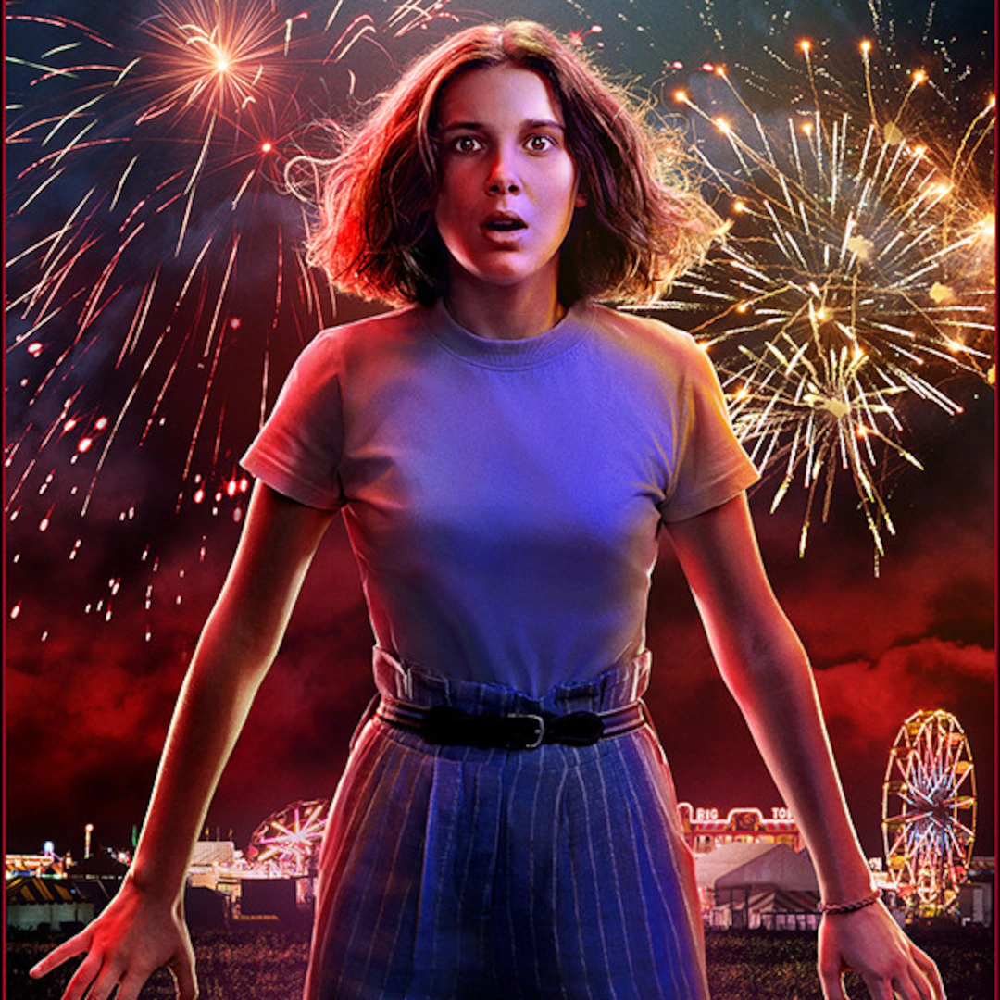

Eleven is a young girl with psychokinetic abilities who escapes from a secretive government laboratory. Eleven is taken in by a group of kids and becomes a key member of their group. Throughout the series, Eleven struggles with her past, including her upbringing in the lab, and her quest to discover her true identity and the extent of her powers. She forms close bonds with the group of friends, especially with Mike Wheeler, and uses her telekinetic abilities to help them battle supernatural threats, including the mysterious Demogorgon and the sinister Upside Down. Eleven's character is known for her strength, resilience, and determination, and her story is a central focus of the show's narrative.